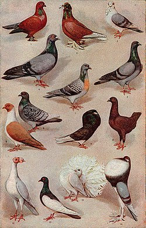
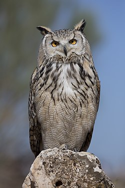
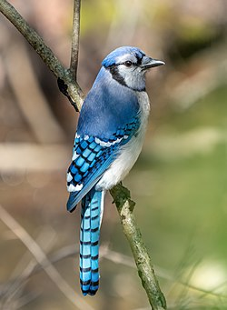
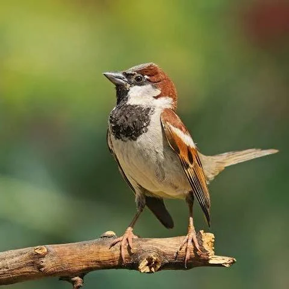

Gulls and seagulls are seabirds of the subfamily Larinae. They are most closely related to terns and skimmers, distantly related to auks, and even more distantly related to waders. Until the 21st century, most gulls were placed in the genus Larus, but that arrangement is now considered polyphyletic, leading to the resurrection and revision of several genera.[1] An older name for gulls is mews; this still exists in certain regional English dialects and is cognate with German Möwe, Danish måge, Swedish mås, Dutch meeuw, Norwegian måke/måse, and French mouette.[2][3][4] Gulls are usually grey or white, often with black markings on the head or wings. They normally have harsh wailing or squawking calls, stout bills, and webbed feet. Most gulls are ground-nesting piscivores or carnivores which take live food or scavenge opportunistically, particularly the Larus species. Live food often includes crustaceans, molluscs, fish and small birds. Gulls have unhinging jaws that provide the flexibility to consume large prey. Gulls are typically coastal or inland species, rarely venturing far out to sea, except for the kittiwakes and Sabine's gull.[5] The large species take up to four years to attain full adult plumage, but two years is typical for small gulls. Large white-headed gulls are usually long-lived birds, with a maximum age of 49 years recorded for the European herring gull.[6] Gulls nest in large, densely packed, noisy colonies. They lay two or three speckled eggs in nests composed of vegetation. The young are precocial, born with dark mottled down and mobile upon hatching.[7] Gulls are resourceful, inquisitive, and intelligent, the larger species in particular,[8] demonstrating complex methods of communication and a highly developed social structure. For example, many gull colonies display mobbing behaviour, attacking and harassing predators and other intruders.[9] Certain species, such as the herring gull, have exhibited tool-use behaviour, for example using pieces of bread as bait with which to catch goldfish.[10] Many species of gulls have learned to coexist successfully with humans and thrive in human habitats.[11] Others rely on kleptoparasitism to get their food. Gulls have been observed preying on live whales, landing on the whale as it surfaces and pecking out pieces of flesh.[12] Description and morphology The Pacific gull is a large white-headed gull with a distinctively heavy bill. Gulls range in size from the little gull, at 120 grams (4+1⁄4 ounces) and 29 centimetres (11+1⁄2 inches), to the great black-backed gull, at 1.75 kg (3 lb 14 oz) and 76 cm (30 in). They are generally uniform in shape, with heavy bodies, long wing, and moderately long necks. The tails of all but three species are rounded; the exceptions being Sabine's gull and swallow-tailed gulls, which have forked tails, and Ross's gull, which has a wedge-shaped tail. Gulls have moderately long legs, especially when compared to the similar terns, with fully webbed feet. The bill is generally heavy and slightly hooked, with the larger species having stouter bills than the smaller species. The bill colour is often yellow with a red spot for the larger white-headed species and red, dark red or black in the smaller species.[13] Gulls are a generalist species that can thrive in various environments and survive on a widely varied diet. They are the least specialised of all the seabirds, and their morphology allows for equal adeptness in swimming, flying, and walking. They are more adept walking on land than most other seabirds, and the smaller gulls tend to be more manoeuvrable while walking. The walking gait of gulls includes a slight side to side motion, something that can be exaggerated in breeding displays. In the air, they are able to hover and they are also able to take off quickly with little space.[13] The general pattern of plumage in adult gulls is a white body with a darker mantle; the extent to which the mantle is darker varies from pale grey to black. A few species vary in this, the ivory gull is entirely white, and some like the lava gull and Heermann's gull have partly or entirely grey bodies. The wingtips of most species are black, which improves their resistance to wear and tear, usually with a diagnostic pattern of white markings. The head of a gull may be covered by a dark hood or be entirely white. The plumage of the head varies by breeding season; in nonbreeding dark-hooded gulls, the hood is lost, sometimes leaving a single spot behind the eye, and in white-headed gulls, nonbreeding heads may have streaking.[13] Distribution and habitat See also: List of Charadriiformes by population Swallow-tailed gulls are endemic to the Galapagos Islands. Gulls have a worldwide cosmopolitan distribution. They breed on every continent, including the margins of Antarctica, and are even found in the high Arctic. They are less common in the tropics, although a few species do live on tropical islands such as the Galapagos and New Caledonia. Many species breed in coastal colonies, with a preference for islands; one particular species, the grey gull, breeds in the interior of dry deserts far from water. Considerable variety exists in the Laridae family, and species may breed and feed in marine, freshwater, or terrestrial habitats.[13] Most gull species are migratory, with birds moving to warmer habitats during the winter, but the extent to which they migrate varies by species. Some migrate long distances, notably Sabine's gull, which migrates from the Arctic coasts to wintering grounds off the west coasts of South America and southern Africa, and Franklin's gull, which migrates from Canada to winter off the west coast of South America. Other species move much shorter distances and may simply disperse along the coasts near their breeding sites.[13] Gulls in the coat of arms of Haugesund A big influence on non-breeding gull distribution is the availability of food patches. Human fisheries especially have an impact, since they often provide an abundant and predictable food resource.[14] Two species of gulls dependent on human fisheries are Audouin's gull (Ichthyaetus audouinii) and lesser black-backed gulls (Larus fuscus); their breeding distributions (especially the black-backed gull) are heavily impacted by human fishing discards and fishing ports.[14] Other environmental drivers that structure bird habitat and distribution are human activity and climate impacts. For example, waterbird distribution in Mediterranean wetlands is influenced by changes in salinity, water depth, water body isolation and hydroperiod, all of which have been observed to affect the bird community structure in both a species- and guild-specific way.[15] Gulls in particular have high associations with salinity levels, which were found to be the main environmental predictor for waterbird assemblage.[15] Behaviour Diet and feeding Charadriiform birds drink salt water, as well as fresh water, as they possess exocrine glands located in supraorbital grooves of the skull by which salt can be excreted through the nostrils to assist the kidneys in maintaining electrolyte balance.[16] Gulls are highly adaptable feeders that take a wide range of prey opportunistically. The food taken by gulls includes fish, and marine and freshwater invertebrates, both alive and already dead; terrestrial arthropods and invertebrates such as insects and earthworms; rodents, eggs, carrion, offal, reptiles, amphibians, seeds, fruit, human refuse, and even other birds. No gull species is a single-prey specialist, and no gull species forages using only a single method. The type of food depends on circumstances; terrestrial prey, e.g. seeds, fruit and earthworms, is more common during the breeding season, while marine prey is more common in the nonbreeding season when birds spend more time on large bodies of water.[13] Hartlaub's gull foot paddling, Cape Town Black-tailed gulls following a ferry in Matsushima, Japan Gulls not only take a wide range of prey, they also display great versatility in how they obtain it; prey can be caught in the air, on water, or on land. A number of hooded species are able to hawk insects on the wing, although the larger species perform this feat more rarely. Gulls on the wing snatch items both off the water and off the ground, and they are able to plunge-dive into water to catch prey. Smaller species are more manoeuvrable and better able to hover-dip fish from the air. Dipping is common when birds are sitting on the water, and gulls may swim in tight circles or foot paddle to bring marine invertebrates up to the surface. Food is also obtained by searching the ground, often on the shore among sand, mud or rocks. Larger gulls tend to do more feeding in this way. Gulls may also engage in foot paddling in shallow water for invertebrates[17] or on wet grass for earthworms.[18] One method of obtaining prey involves dropping heavy shells of clams and mussels onto hard surfaces.[13] Gulls may fly some distance to find a suitable surface on which to drop shells, and there is evidently a learned component to the task because older birds are more successful than younger birds.[19] While overall feeding success is a function of age, the diversity in both prey and feeding methods is not. The time taken to learn foraging skills may explain the delayed maturation in gulls.[13] Gulls have only a limited ability to dive below the water surface to feed on deeper prey. To obtain prey from a greater depth, many species of gulls feed in association with other animals, where marine hunters drive prey to the surface when hunting.[13] Examples of such associations include four species of gulls that feed around plumes of mud brought to the surface by feeding grey whales,[20] and also between orcas (the largest dolphin species) and kelp gulls (among other seabirds).[21] Looking at the effect of humans on gull diet, overfishing of target prey such as sardines have caused a shift in diet and behaviour. Analysis of the yellow-legged gull's (Larus michahellis) pellets off the northwest coast of Spain has revealed a shift from a sardine to crustacean-based diet.[22] This shift was linked to higher fishing efficiency and thus overall fish stock depletion.[22] Lastly, closure of nearby open-air landfills limited food availability for the gulls, further creating a stress on their shift in diet.[22] From 1974 to 1994, yellow-legged gull populations on Berlenga Island, Portugal, increased from 2600 to 44,698 individuals. Analyzing both adult and chick remains, researchers found a mixture of both natural prey and human refuse. The gulls relied substantially on the Henslow's swimming crab (Polybius henslowii). Yet, in times when local prey availability is low, the gulls shift to human-related food. These temporal shifts from marine to terrestrial prey highlight the resilience of adult gulls and their ability to keep chick condition consistent.[23] Human disturbance has also been shown to have an effect on gull breeding, in which hatching failure is directly proportional to the amount of disturbance in a given plot.[24] Certain gull breeds have been known to feast on the eyeballs of baby seals and directly pilfer milk from the elephant seal's teat.[25][26] American herring gull eating a starfish at Plum Island Nature Preserve, Massachusetts, US American herring gull eating a starfish at Plum Island Nature Preserve, Massachusetts, US Western gull attacking an American coot. The gull is probably trying to steal food from the coot's bill. Western gull attacking an American coot. The gull is probably trying to steal food from the coot's bill. Juvenile gull waiting for discarded human food on Huntington Beach Pier, California, US Juvenile gull waiting for discarded human food on Huntington Beach Pier, California, US Lesser black-backed gulls in a feeding frenzy Lesser black-backed gulls in a feeding frenzy Western gull at Point Lobos State Natural Reserve, California, US Western gull at Point Lobos State Natural Reserve, California, US Juvenile ring-billed gull, Sandy Hook shore, New Jersey, US Juvenile ring-billed gull, Sandy Hook shore, New Jersey, US European herring gull stealing food from a man's hand, Ostend, Belgium European herring gull stealing food from a man's hand, Ostend, Belgium Breeding Black-legged kittiwakes nest colonially, but have tiny, closely packed territories. The nest of a great black-backed gull, with three typical eggs Newborn baby gulls with parent Two ring-billed gull chicks sitting amongst rocks Gulls are monogamous and colonial breeders that display mate fidelity which normally lasts for the life of the pair. Divorce of mated pairs does occur, but it apparently has a social cost that persists for a number of years after the break-up. Gulls also display high levels of site fidelity, returning to the same colony after breeding there once and even usually breeding at the same location within that colony. Gull colonies can vary from just a few pairs to over a hundred thousand pairs, and may be exclusive to that gull species or shared with other seabird species. A few species nest singly, and single pairs of band-tailed gulls may breed in colonies of other bird species. Within colonies, gull pairs are territorial, defending an area of varying size around the nesting site from others of their species. This area can be as large as a 5-metre radius around the nest in the European herring gull to just a tiny area of cliff ledge in the kittiwakes.[13] Most gulls breed once a year and have predictable breeding seasons lasting for three to five months. Gulls begin to assemble around the colony for a few weeks prior to occupying it. Existing pairs re-establish their pair-bonds, and unpaired birds begin courting. Pairs then move back into their territories, and new males establish new territories and attempt to court females. Gulls defend their territories from rivals of both sexes using calls and aerial attacks.[13] Nest building is an important part of the pair-bonding process. Most gull nests are mats of herbaceous matter with a central nest cup. Nests are usually built on the ground, but a few species establish their nests on cliffs (the usual preference for kittiwakes), and some choose to nest in trees and high places (e.g. Bonaparte's gulls). Species that nest in marshes need to construct a nesting platform to keep the nest dry, particularly species that nest in tidal marshes. Both sexes gather nesting material and build the nest, but the division of labour is not always exactly equal.[13] In coastal towns, many gulls nest on rooftops and can be observed by nearby human residents. Clutch size is typically three eggs, although some of the smaller gulls only lay two, and the swallow-tailed gull produces a single egg. Birds synchronise their laying within colonies, with a higher level of synchronisation in larger colonies. The eggs of gulls are usually dark tan to brown or dark olive with dark splotches and scrawl markings, and they are well camouflaged. Both sexes incubate the eggs; incubation bouts last between one and four hours during the day, and one parent incubates through the night.[13] Research on various bird species, including gulls, suggests that females form pair bonds with other females to obtain alloparental care for their dependent offspring, a behaviour seen in other animal species, such as elephants, wolves, and the fathead minnow.[27] Lasting between 22 and 26 days, incubation begins after the first egg is laid but is not continuous until after the second egg is laid, meaning that the first two chicks hatch at about the same time, and the third some time later. Young chicks are brooded by their parents for about one or two weeks, and often at least one parent stays behind to guard the chicks until they fledge. Although the chicks are fed by both parents, early on in the rearing period the male does most of the feeding and the female most of the brooding and guarding.[13] Taxonomy The family Laridae was introduced (as Laridia) by the French polymath Constantine Samuel Rafinesque in 1815.[28][29] The taxonomy of gulls is confused by their widespread distribution zones of hybridisation leading to gene flow. Some have traditionally been considered ring species, but research has suggested that this assumption is questionable.[30] Before the 21st century, most gulls were placed in the genus Larus, but this arrangement is now known to be polyphyletic, leading to the resurrection of the genera Ichthyaetus, Chroicocephalus, Leucophaeus, Saundersilarus, and Hydrocoloeus.[1] Some English names refer to species complexes within the group: Large white-headed gull is used to describe the 18 or so herring gull-like species, from California gull to lesser black-backed gull in the taxonomic list below. White-winged gull is used to describe the four pale-winged, high Arctic-breeding taxa within the former group; these are Iceland gull, glaucous gull, Thayer's gull, and Kumlien's gull. In common usage, members of various gull species are often referred to as 'sea gulls' or 'seagulls'; however, this is a layperson's term and is not used by most ornithologists and biologists. The name is used informally to refer to a common local species (or all gulls in general) and has no fixed taxonomic meaning.[31] In common usage, gull-like seabirds that are not technically gulls (e.g. albatrosses, fulmars, terns, and skuas) may also be referred to as 'seagulls' by the layperson. The American Ornithologists' Union combines the Sternidae, Stercorariidae, and Rhynchopidae as subfamilies in the family Laridae, but early 21st-century research[32][33][34] shows this to be incorrect. A molecular phylogenetic study published in 2022 found the following relationships between the genera, including the most recent generic change: the placement of Saunders's gull in its own genus Saundersilarus.[35] Gulls Creagrus – swallow-tailed gull Hydrocoloeus – little gull Rhodostethia – Ross's gull Rissa – kittiwakes (2 species) Xema – Sabine's gull Pagophila – ivory gull Saundersilarus – Saunders's gull Chroicocephalus – (10 species) Leucophaeus – (5 species) Ichthyaetus – (6 species) Larus – (24 species) List of species This is a list of the 54 gull species, presented in taxonomic sequence. Image Genus Species Larus Linnaeus, 1758 Pacific gull Larus pacificus Belcher's gull Larus belcheri Olrog's gull Larus atlanticus Black-tailed gull Larus crassirostris Heermann's gull Larus heermanni Common gull Larus canus Short-billed gull Larus brachyrhynchus Ring-billed gull Larus delawarensis California gull Larus californicus Great black-backed gull Larus marinus Kelp gull Larus dominicanus ("southern black-backed gull" or "karoro" in New Zealand) Cape gull Larus dominicanus vetula Glaucous-winged gull Larus glaucescens Western gull Larus occidentalis Yellow-footed gull Larus livens Glaucous gull Larus hyperboreus Iceland gull Larus glaucoides Kumlien's gull Larus glaucoides kumlieni Thayer's gull Larus glaucoides thayeri European herring gull Larus argentatus American herring gull Larus smithsonianus Caspian gull Larus cachinnans Yellow-legged gull Larus michahellis Vega gull Larus vegae Armenian gull Larus armenicus Slaty-backed gull Larus schistisagus Lesser black-backed gull Larus fuscus Heuglin's gull Larus fuscus heuglini Ichthyaetus Kaup, 1829 White-eyed gull Ichthyaetus leucophthalmus Sooty gull Ichthyaetus hemprichii Pallas's gull (or Great black-headed gull) Ichthyaetus ichthyaetus Audouin's gull Ichthyaetus audouinii Mediterranean gull Ichthyaetus melanocephalus Relict gull Ichthyaetus relictus Leucophaeus Bruch, 1853 Dolphin gull Leucophaeus scoresbii Laughing gull Leucophaeus atricilla Franklin's gull Leucophaeus pipixcan Lava gull Leucophaeus fuliginosus Grey gull Leucophaeus modestus Chroicocephalus Eyton, 1836 Silver gull Chroicocephalus novaehollandiae Red-billed gull Chroicocephalus novaehollandiae scopulinus Huahine gull Chroicocephalus utunui (extinct) Hartlaub's gull Chroicocephalus hartlaubii Brown-hooded gull Chroicocephalus maculipennis Grey-headed gull Chroicocephalus cirrocephalus Andean gull Chroicocephalus serranus Black-billed gull Chroicocephalus bulleri Brown-headed gull Chroicocephalus brunnicephalus Black-headed gull Chroicocephalus ridibundus Slender-billed gull Chroicocephalus genei Bonaparte's gull Chroicocephalus philadelphia Saundersilarus Dwight, 1926 Saunders's gull, Saundersilarus saundersi Hydrocoloeus Kaup, 1829 (may include Rhodostethia) Little gull Hydrocoloeus minutus Rhodostethia MacGillivray, 1842 Ross's gull Rhodostethia rosea Rissa Stephens, 1826 Black-legged kittiwake Rissa tridactyla Red-legged kittiwake Rissa brevirostris Pagophila Kaup, 1829 Ivory gull Pagophila eburnea Xema Leach, 1819 Sabine's gull Xema sabini Creagrus Bonaparte, 1854 Swallow-tailed gull Creagrus furcatus Evolutionary history The Laridae are known from not-yet-published fossil evidence since the Early Oligocene, some 30–33 million years ago. Three gull-like species were described by Alphonse Milne-Edwards from the early Miocene of Saint-Gérand-le-Puy, France. A fossil gull from the Middle to Late Miocene of Cherry County, Nebraska, US, is placed in the prehistoric genus Gaviota;[36] apart from this and the undescribed Early Oligocene fossil, all prehistoric species were tentatively assigned to the modern genus Larus. Among those of them that have been confirmed as gulls, Milne-Edwards' "Larus" elegans and "L." totanoides from the Late Oligocene/Early Miocene of southeast France have since been separated in Laricola.[37] References Pons JM, Hassanin A, Crochet PA (December 2005). "Phylogenetic relationships within the Laridae (Charadriiformes: Aves) inferred from mitochondrial markers". Molecular Phylogenetics and Evolution. 37 (3): 686–99. Bibcode:2005MolPE..37..686P. doi:10.1016/j.ympev.2005.05.011. PMID 16054399. "mew". Webster's Revised Unabridged Dictionary, 1913. Archived from the original on 4 November 2013. Retrieved 13 July 2013. "mew". The Free Dictionary. Archived from the original on 13 May 2013. "mew". Merriam-Webster.com Dictionary. Merriam-Webster. Olsen, K.M.; Larsson, H. (2004). Gulls of Europe, Asia, and North America. Helm. ISBN 0-7136-7087-8. "AnAge entry for Larus argentatus". The Animal Ageing and Longevity Database. Archived from the original on 4 November 2013. Retrieved 23 November 2008. Harrison CJ (1991). Forshaw J (ed.). Encyclopaedia of Animals: Birds. London: Merehurst Press. pp. 109–111. ISBN 978-1-85391-186-6. "Gulls and man". RSPB. 13 August 2007. Archived from the original on 24 December 2009. Retrieved 4 January 2010. Alcock, J. (1998). Animal Behavior: An Evolutionary Approach (7th edition). Sinauer Associates, Inc. Sunderland, Massachusetts. ISBN 0-87893-009-4. Henry PY, Aznar JC (June 2006). "Tool-use in Charadrii: Active Bait-Fishing by a Herring Gull". Waterbirds. 29 (2): 233–234. doi:10.1675/1524-4695(2006)29[233:TICABB]2.0.CO;2. S2CID 85738152. "Seagull becomes crisp shoplifter". BBC News. 20 July 2007. Archived from the original on 15 February 2009. Retrieved 24 July 2009. "Gulls' vicious attacks on whales". BBC News. 21 June 2009. Archived from the original on 26 June 2009. Burger A, Gochfeld M (1996). "Family Laridae (Gulls)". In del Hoyo J, Elliott A, Sargatal J (eds.). Handbook of the Birds of the World. Vol. 3, Hoatzin to Auks. Barcelona: Lynx Edicions. pp. 572–599. ISBN 978-84-87334-20-7. Ramírez F, Gutiérrez-Expósito C, Afán I, Giménez J, de Stephanis R, Forero MG (7 May 2015). "Human influence on gull non-breeding distribution: potential consequences of changes in fishing practices". Marine Ecology Progress Series. 527: 221–232. Bibcode:2015MEPS..527..221R. doi:10.3354/meps11282. hdl:10261/122438. ISSN 0171-8630. Archived from the original on 6 May 2021. Retrieved 1 March 2021. Ramírez F, Rodríguez C, Seoane J, Figuerola J, Bustamante J (13 February 2018). Yue BS (ed.). "How will climate change affect endangered Mediterranean waterbirds?". PLOS ONE. 13 (2): e0192702. Bibcode:2018PLoSO..1392702R. doi:10.1371/journal.pone.0192702. PMC 5811028. PMID 29438428. Dowdey, Sarah (9 July 2009). "How do seagulls drink saltwater?". HowStuffWorks. Archived from the original on 27 March 2013. Retrieved 20 March 2013. Buckley PA (September 1966). "Foot-paddling in four American gulls, with comments on its possible function and stimulation". Zeitschrift für Tierpsychologie. 23 (4): 395–402. Bibcode:1966Ethol..23..395B. doi:10.1111/j.1439-0310.1966.tb01603.x. PMID 5992179. S2CID 9504887. "Dancing for their dinner". CBC Docs. Retrieved 28 January 2025. Ingolfsson A, Estrella BT (1978). "The development of shell-cracking behaviour in herring gulls" (PDF). The Auk. 95 (3): 577–579. doi:10.1093/auk/95.3.577. Archived (PDF) from the original on 4 November 2014. Retrieved 30 March 2013. Harrison C (1979). "The Association of Marine Birds and Feeding Gray Whales" (PDF). Condor. 81 (1): 93–95. doi:10.2307/1367866. JSTOR 1367866. Archived (PDF) from the original on 4 March 2016. Retrieved 30 March 2013. Ridoux V (1987). "Feeding association between seabirds and killer whales, Orcinus orca, around subantarctic Crozet Islands". Canadian Journal of Zoology. 65 (8): 2113–2115. Bibcode:1987CaJZ...65.2113R. doi:10.1139/z87-324. Calado, Joana G.; Paiva, Vítor H.; Ramos, Jaime A.; Velando, Alberto; Munilla, Ignacio (5 February 2020). "Anthropogenic food resources, sardine decline and environmental conditions have triggered a dietary shift of an opportunistic seabird over the last 30 years on the northwest coast of Spain". Regional Environmental Change. 20 (1): 10. Bibcode:2020REnvC..20...10C. doi:10.1007/s10113-020-01609-6. ISSN 1436-378X. S2CID 211028229. Archived from the original on 20 November 2023. Retrieved 1 March 2021. Alonso, Hany; Almeida, Ana; Granadeiro, José Pedro; Catry, Paulo (December 2015). "Temporal and age-related dietary variations in a large population of yellow-legged gulls Larus michahellis: implications for management and conservation". European Journal of Wildlife Research. 61 (6): 819–829. Bibcode:2015EJWR...61..819A. doi:10.1007/s10344-015-0958-9. ISSN 1612-4642. S2CID 15258313. Archived from the original on 20 November 2023. Retrieved 7 March 2021. Robert, Henry C.; Ralph, C. John (1975). "Effects of Human Disturbance on the Breeding Success of Gulls". The Condor. 77 (4): 495. doi:10.2307/1366103. ISSN 0010-5422. JSTOR 1366103. Archived from the original on 20 November 2023. Retrieved 2 March 2021. Palermo (2015). "Gruesome Meal: Seagulls Snack on Baby Seals' Eyeballs". Live Science. Archived from the original on 12 February 2022. Retrieved 23 March 2022. Gallo-Reynoso (2010). "Feral cats steal milk from northern Elephant Seals". Therya. 1 (3): 207–211. doi:10.12933/therya-10-14. Riedman ML (1982). "The Evolution of Alloparental Care in Mammals and Birds". The Quarterly Review of Biology. 57 (4): 405–435. doi:10.1086/412936. S2CID 85378202. Rafinesque CS (1815). Analyse de la nature ou, Tableau de l'univers et des corps organisés (in French). Vol. 1815. Palermo: Self-published. p. 72. Archived from the original on 13 May 2019. Retrieved 21 February 2018. Bock WJ (1994). History and Nomenclature of Avian Family-Group Names. Bulletin of the American Museum of Natural History. Vol. 222. New York: American Museum of Natural History. pp. 138, 252. hdl:2246/830. Liebers D, de Knijff P, Helbig AJ (May 2004). "The herring gull complex is not a ring species". Proceedings. Biological Sciences. 271 (1542): 893–901. doi:10.1098/rspb.2004.2679. PMC 1691675. PMID 15255043. Hayward I (24 July 2009). "Are sea gulls actually called sea gulls or is there another name for them?". The RSPB: Ask An Expert. Archived from the original on 13 September 2018. Retrieved 12 September 2018. Paton TA, Baker AJ (June 2006). "Sequences from 14 mitochondrial genes provide a well-supported phylogeny of the Charadriiform birds congruent with the nuclear RAG-1 tree". Molecular Phylogenetics and Evolution. 39 (3): 657–67. Bibcode:2006MolPE..39..657P. doi:10.1016/j.ympev.2006.01.011. PMID 16531074. Paton TA, Baker AJ, Groth JG, Barrowclough GF (November 2003). "RAG-1 sequences resolve phylogenetic relationships within Charadriiform birds". Molecular Phylogenetics and Evolution. 29 (2): 268–78. Bibcode:2003MolPE..29..268P. doi:10.1016/S1055-7903(03)00098-8. PMID 13678682. Thomas GH, Wills MA, Székely T (August 2004). "A supertree approach to shorebird phylogeny". BMC Evolutionary Biology. 4 (1) 28. doi:10.1186/1471-2148-4-28. PMC 515296. PMID 15329156. Černý, David; Natale, Rossy (2022). "Comprehensive taxon sampling and vetted fossils help clarify the time tree of shorebirds (Aves, Charadriiformes)". Molecular Phylogenetics and Evolution. 177 107620. Bibcode:2022MolPE.17707620C. doi:10.1016/j.ympev.2022.107620. PMID 36038056. Miller, A. H. and Sibley (1941) described Gaviota niobrara from the upper Miocene of Nebraska De Pietri VL (2011). "A revision of the Lari (Aves, Charadriiformes) from the early Miocene of Saint-Gérand-le-Puy (Allier, France)". Journal of Vertebrate Paleontology. 31 (4): 812–828. Bibcode:2011JVPal..31..812D. doi:10.1080/02724634.2011.586663. S2CID 84758271. Further reading Grant PJ (1986). Gulls: a guide to identification. Poyser. ISBN 0-85661-044-5. Howell SN, Dunn J (2007). Gulls of the Americas. Houghton Mifflin Harcourt. ISBN 978-0-618-72641-7. External links Look up gull in Wiktionary, the free dictionary. Wikimedia Commons has media related to Laridae. Wikispecies has information related to Laridae. Rudy's Gull-index Pictures of less well-known plumages of large gulls vte Gulls (subfamily: Larinae) Authority control databases: National Edit this at Wikidata Latvia Categories: Bird common namesLaridaeSeabirds This page was last edited on 3 September 2025, at
 The domestic pigeon (Columba livia "domestica" or Columba livia forma domestica)[2] is a domesticated bird derived from the rock dove Columba livia. Although often termed a "subspecies", the domesticated pigeon does not constitute an accepted zoological subspecies of the rock dove,[1] but a collection of over 350 breeds.[3] The rock dove is among the world's first birds to be domesticated; Mesopotamian cuneiform tablets mention the domestication of pigeons more than 5,000 years ago, as do Egyptian hieroglyphics. Pigeons have held historical importance to humans as food, pets, holy animals, and messengers. Due to their homing ability, pigeons have been used to deliver messages, including war pigeons during the two world wars. Despite this, city pigeons, which are feral birds, are generally seen as pests, mainly due to their droppings and a reputation for spreading disease. Owls are birds from the order Strigiformes[1] (/ˈstrɪdʒəfɔːrmiːz/), which includes over 200 species of mostly solitary and nocturnal birds of prey typified by an upright stance, a large, broad head, binocular vision, binaural hearing, sharp talons, and feathers adapted for silent flight. Exceptions include the diurnal northern hawk-owl and the gregarious burrowing owl. Owls are divided into two families: the true (or typical) owl family, Strigidae, and the barn owl and bay owl family, Tytonidae.[2] Owls hunt mostly small mammals, insects, and other birds, although a few species specialize in hunting fish. They are found in all regions of the Earth except the polar ice caps and some remote islands. A group of owls is called a "parliament"
 The blue jay (Cyanocitta cristata) is a passerine bird in the family Corvidae, native to eastern North America. It lives in most of the eastern and central United States; some eastern populations may be migratory. Resident populations are also in Newfoundland, Canada; breeding populations are found across southern Canada. It breeds in both deciduous and coniferous forests, and is common in residential areas. Its coloration is predominantly blue, with a white chest and underparts, and a blue crest; it has a black, U-shaped collar around its neck and a black border behind the crest. Males and females are similar in size and plumage, which does not vary throughout the year. Four subspecies have been recognized. The blue jay feeds mainly on seeds and nuts, such as acorns, which it may hide to eat later;[2] soft fruits; arthropods; and occasionally small vertebrates. It typically gleans food from trees, shrubs, and the ground, and sometimes hawks insects from the air. Blue jays can be very aggressive to other birds; they sometimes raid nests and have even been found to have decapitated other birds.[3] It builds an open cup nest in the branches of a tree; both sexes participate. The clutch may be two to seven eggs, which are blueish or light brown with darker brown spots. Young are altricial, and are brooded by the female for 8–12 days after hatching. They may stay with their parents for one to two months. The name jay derives from the bird's noisy, garrulous nature and has been applied to other birds of the same family, which are also mostly gregarious.[4] Jays are also called jaybirds The house sparrow (Passer domesticus) is a bird of the sparrow family Passeridae, found in most parts of the world. It is a small bird that has a typical length of 16 cm (6.3 in) and a mass of 24–39.5 g (0.85–1.39 oz). Females and young birds are coloured pale brown and grey, and males have brighter black, white, and brown markings. One of about 25 species in the genus Passer, the house sparrow is native to most of Europe, the Mediterranean Basin, and a large part of Asia. Its intentional or accidental introductions to many regions, including parts of Australasia, Africa, and the Americas, make it the most widely distributed wild bird. The house sparrow is strongly associated with human habitation, and can live in urban or rural settings. Though found in widely varied habitats and climates, it typically avoids extensive woodlands, grasslands, polar regions, and hot, dry deserts far away from human development. For sustenance, the house sparrow routinely feeds at home and public bird feeding stations, but naturally feeds on the seeds of grains, flowering plants and weeds. However, it is an opportunistic, omnivorous eater, and commonly catches invertebrates such as insects and their larvae, caterpillars, and many other natural foods. Because of its numbers, ubiquity, and association with human settlements, the house sparrow is culturally prominent. It is extensively, and usually unsuccessfully, persecuted as an agricultural pest. It has also often been kept as a pet, as well as being a food item and a symbol of lust, sexual potency, commonness, and vulgarity. Though it is widespread and abundant, its numbers have declined in some areas. The bird's conservation status is listed as least concern on the IUCN Red List.
Top